EEDU
Speculative Design Research Case Study - Education in 2040
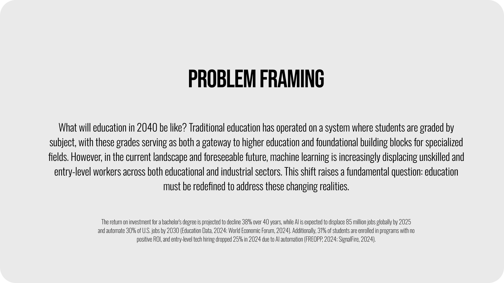
Background
This project is a personal and expanded version of Speculative Design that I took in 2024 (2025), exploring what education might look like in 2040, what scenarios could emerge, and what changes from the present might occur.
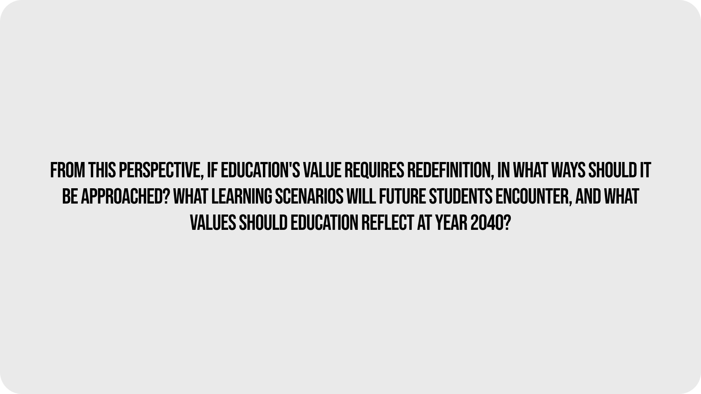
Project Direction
This project was structured by establishing the exploration points of the core problem identified during problem framing as the main synthesis.
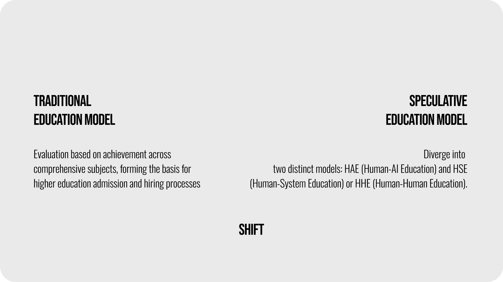
Shift of value
By clearly presenting "shift" as part of the speculative design principles, the project was able to explore what value changes might occur in human society. From this perspective, approximate details regarding the probable future could be established.
Refinement of Synthesis
From the hypothetical future scenario models developed, I identified which aspects to focus on and refined the synthesis to align with this direction.
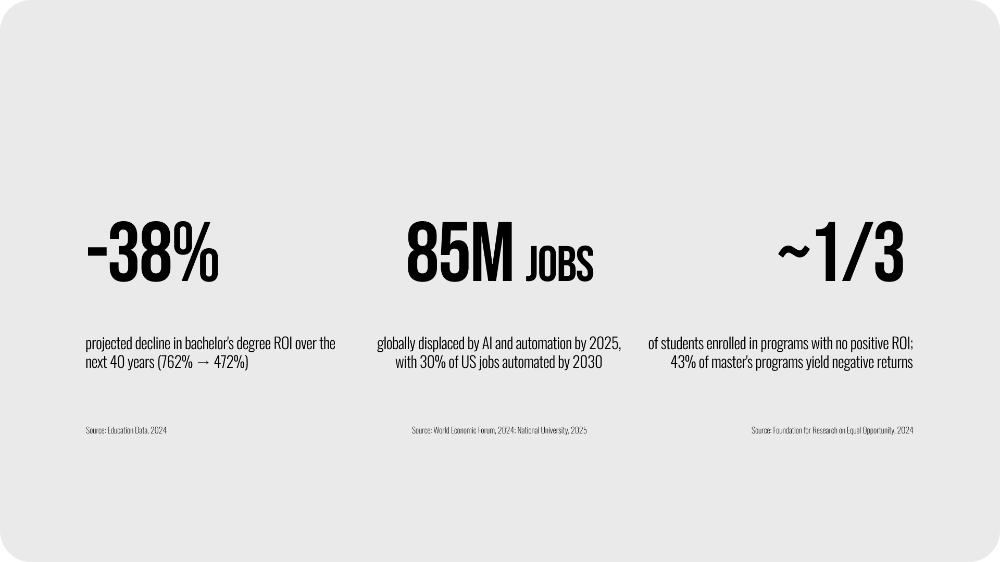
CORE STATISTICS
By citing specific statistics related to the problems to be applied to the synthesis, I further specified the issues and established a foundation for how solutions could be provided to address them.
Project Roadmapping
Using the existing synthesis and predictable scenarios, I developed a comprehensive roadmap that identified key inflection points and outlined how transformative changes might occur.
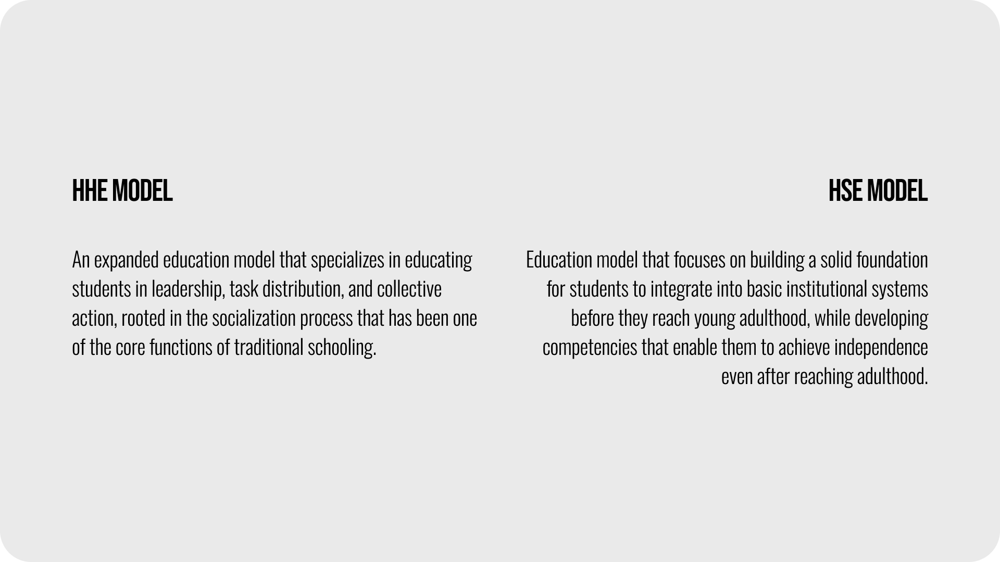
Scoping down/Subcategorization
Through the process of specifying partial elements of the synthesis, I was able to redefine the project direction by developing hypothetical models of how specific potential trends and phenomena could emerge in future scenarios.
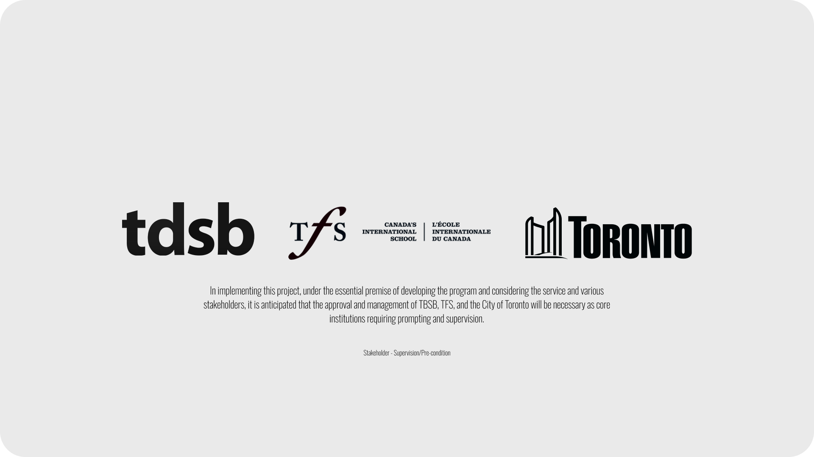
Stakeholder group 1
I identified institutions that would both have the greatest demand for this project and assume supervisory roles in its implementation. These stakeholders can serve as decision-makers and evaluators throughout the co-design process.
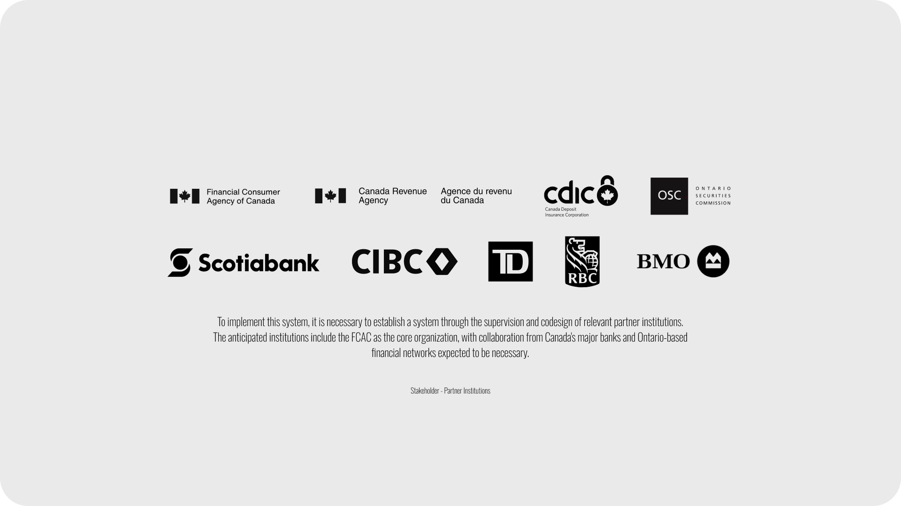
Stakeholder group 2
A secondary stakeholder group was established comprising institutions that participate in the co-design process, directly contribute to system and service design, and collectively determine service model quality. Collaboration with these organizations resulted in a comprehensive listing closely aligned with the service field, forming the groundwork for stakeholder mapping.
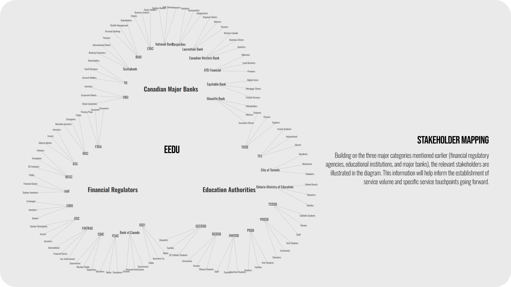
Stakeholder Mapping
Ultimately, by mapping specific stakeholders within the design interest areas and synthesis framework, I established foundational guidelines for operational design programs within this structure. This process enabled exploration of possibilities for future service application.
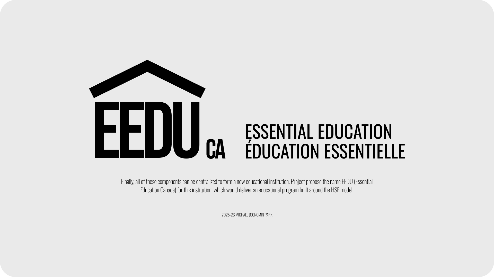
Propositional design
I created a hypothetical institution with basic branding and developed a design proposition that reflects the project scope. This elaboration of the synthesis allows for exploration of potential developmental directions for concrete design solutions.
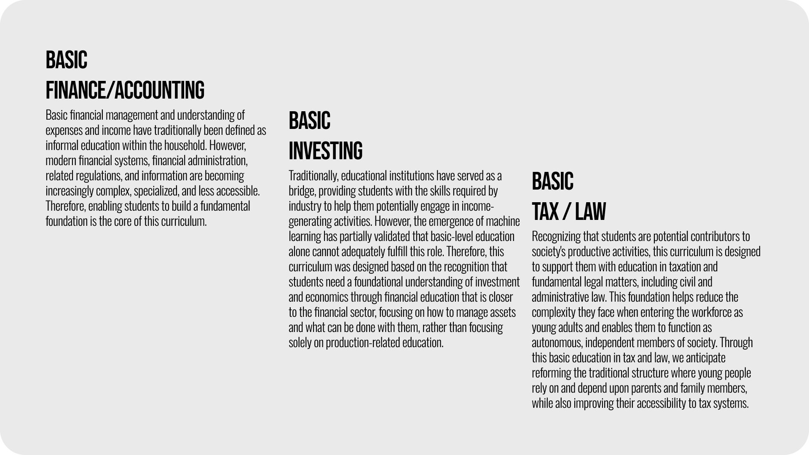
propositional design - touchpoints
The design proposition enabled framing of how potential users could obtain value through specific touchpoints. These detailed sub-design solutions were developed to address key problems while aligning with the core synthesis.
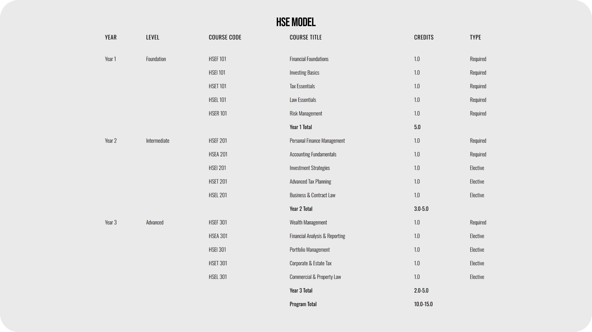
Solution refinement
The design solution was structured in a feasible format from a contemporary perspective (2026), configured as an exploratory framework examining how it could be delivered to users and how the service would specifically operate. While this specification represents a partial element of the project's potential possibilities, the ultimate realization was that these aspects could be refined more precisely through the co-design process. Therefore, a program was developed as a general outline.
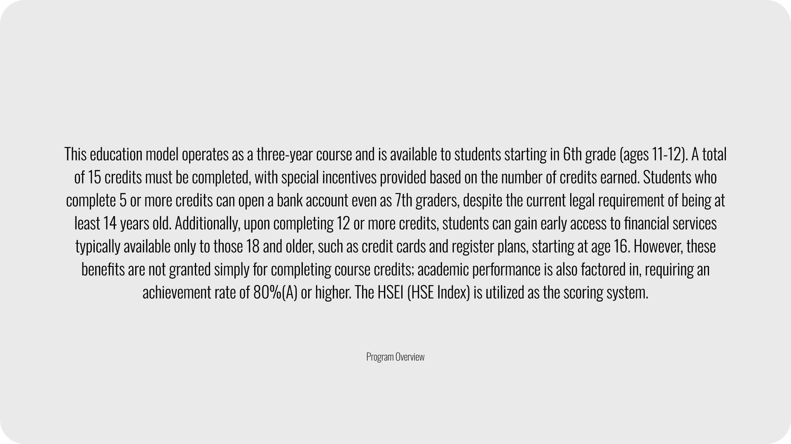
Expanding Design Solutions - Complementary Framework
While the initial design solution reflected designer and institutional expectations, I recognized the necessity of a complementary sub-structure featuring a user reward system to structurally promote the program through compensatory mechanisms. Consequently, I explored how to direct the education-reward behavioral mechanism in a positive direction, developing programs that facilitate more direct user interaction and deliver concrete utility.
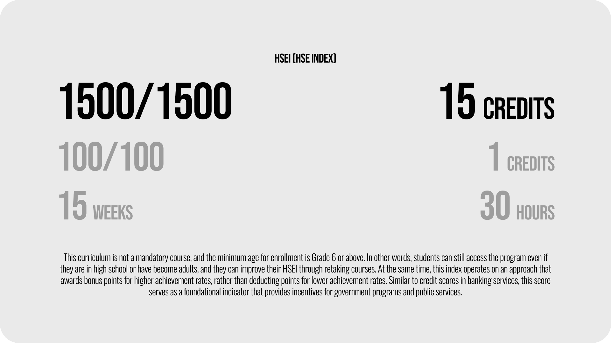
Design Solution - Comprehensive Overview
By detailing the design solution's interactions and structuring them systematically, I was able to explicitly articulate both the concrete value users obtain and the value institutions aim to achieve.
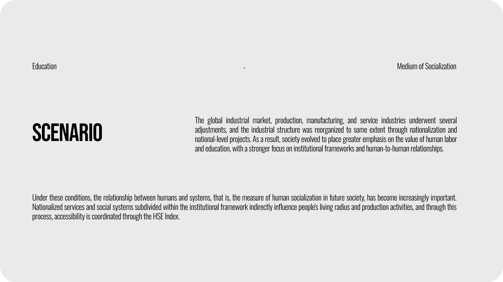
Scenario - Ideal situation
Before proceeding to detailed storyboarding, this outlines potential scenarios based on the synthesis, core shifts, and proposed design as foundational conditions, and describes the context for the most ideal scenario for the design solution.
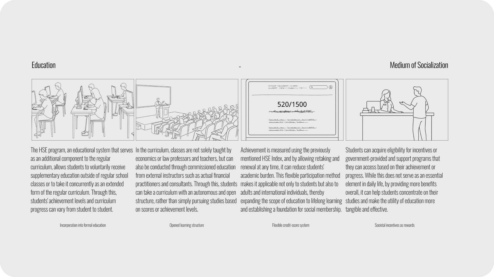
Scenario - Storyboarding
Through exploration of basic user access possibilities and subsequent visualization, the operation of potential interactions could be examined. This process reconfirmed that the design's foundational premise is utility-based value, and these findings served as experimental groundwork for how to specify and deliver such design in future iterations.
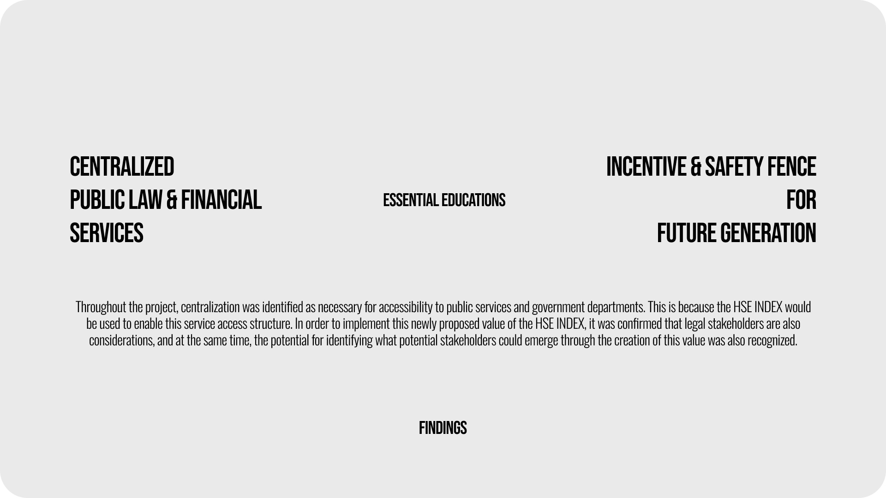
finalization
Ultimately, I explored potential solutions, reconstructed the synthesis, and examined the project's core essence. Based on this, the direction for the next prototyping phase was established as web design branding.
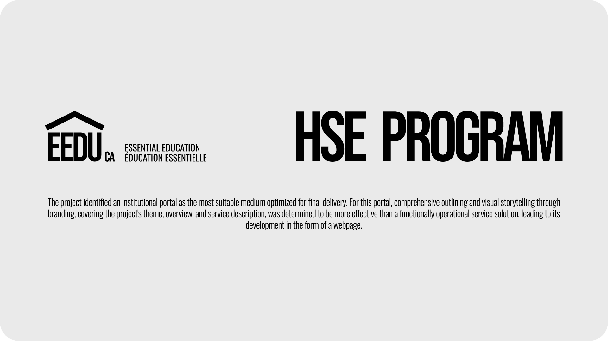